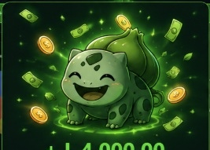

INGRESOS · ESTE MES
L 0.00Entradas registradasBIENVENIDO A QUERUX 3.0 ● TU PANEL
Una vista clara de tus finanzas.
Ingresos, gastos, ahorros y pendientes de un vistazo.
GASTOS REALES · ESTE MES
L 0.00Sin contar el ahorroDISPONIBLE · ESTE MES
L 0.00Ingresos − gastos − ahorroAHORRADO · ESTE MES
L 0.000% de tus ingresosResumen del mes
Tu presupuesto y movimientos
Presupuesto usado0%
L 0.00 gastadosSin presupuesto
Actividad reciente
Tu estado financiero
Hoy
Comenzando
Registra tus primeros movimientos para ver el resumen.
Próximos pagos
Últimos 6 meses
Ingresos Gastos reales
Principales gastos
Este mesMovimientos
Registra, edita y consulta ingresos, gastos y ahorros.
Nuevo movimiento
Guardado localmenteMovimiento rápido
Cada registro actualiza tus estadísticas al instante.
¡Cada movimiento cuenta para organizar tu dinero!
Historial de movimientos
0 registrosMis cuentas
Organiza efectivo, bancos y tarjetas. Las transferencias entre cuentas no se cuentan como gastos.
Agregar cuenta
El saldo inicial no es ingreso. Los movimientos antiguos se asignan provisionalmente a la cuenta «Principal»; puedes editarlos para elegir otra cuenta.
Transferir entre cuentas
Ahorro y metas
Tu ahorro queda separado de los gastos de consumo.
Meta principal
Reto de ahorro0%
de tu meta completada
MetaL 0.00
AhorradoL 0.00
FaltanteL 0.00
Configurar meta
Registrar ahorro
Historial de ahorro
Presupuestos
Controla cuánto puedes gastar en el mes y por categoría.
Presupuesto mensual
Gastado este mes0%
AsignadoL 0.00
GastadoL 0.00
DisponibleL 0.00
Límite por categoría
Usa 0 para quitar el límite. Las alertas aparecen al 80% y al 100%.
Estado por categoría
Pagos y deudas
Organiza vencimientos, gastos recurrentes y préstamos pendientes.
Nuevo gasto recurrente
Mis recurrentes
Agregar deuda o préstamo
El saldo de deuda disminuye al registrar pagos. Intereses y cargos adicionales no se calculan automáticamente.
Deudas activas
Calendario financiero
Reportes
Compara meses y descubre en qué se utiliza tu dinero.
INGRESOS
L 0.00GASTOS REALES
L 0.00AHORRO
L 0.00DISPONIBLE
L 0.00Distribución de gastos
Sin ahorroGastadoL 0.00
Comparativa de 6 meses
Ingresos vs gastosIngresos Gastos reales
Resumen histórico por mes
| Mes | Ingresos | Gastos reales | Ahorro | Disponible |
|---|
Ajustes y respaldo
Personaliza Querux y conserva tus datos de forma segura.
Copias de seguridad
Tu información se guarda únicamente en este navegador hasta que descargues una copia.
Antes de actualizar Querux
Descarga tu copia JSON y consérvala fuera de este navegador. Restaurar reemplazará los datos guardados actualmente.
Personalización
Categorías personalizadas
Acerca de Querux 3.0
Esta versión puede leer los registros locales de Querux 2.0 si se publica en la misma dirección y se abre con el mismo navegador. También puede restaurar copias JSON de Querux 2.0. No incluye cuentas en la nube ni sincronización; no publiques tus copias JSON en GitHub.